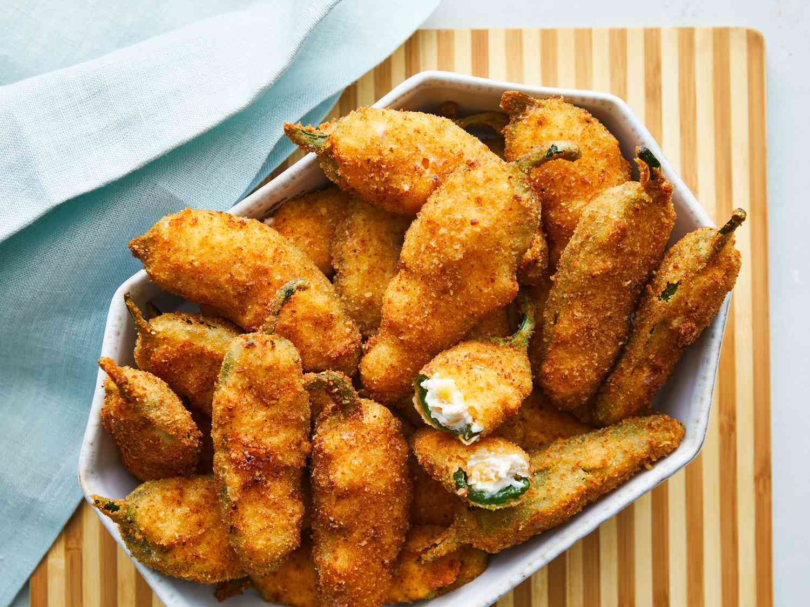

Pepper Poppers Recipe from Stardew Valley

Description
Step into the rustic charm of Pelican Town with
Stardew Valley's Pepper Poppers,
a delightful snack that captures the
essence of the valley's vibrant crops and community spirit.
These bite-sized wonders feature fresh
jalapeño peppers, generously stuffed with a
creamy blend of cheese and spices, then
lovingly coated in a crispy breadcrumb crust.
Each popper offers a tantalizing balance of heat and
creamy indulgence, making them the perfect treat
for any occasion, from cozy gatherings with
friends to lazy afternoons on the farm.
Join us on a culinary adventure as
we unlock the secrets behind this beloved
Stardew Valley recipe, bringing a taste of rural
tranquility and farm-fresh goodness straight to your kitchen."
Ingredients
- 8 oz cream cheese
- /2 cup shredded sharp Cheddar cheese
- /4 cup finely chopped pepperoni
- 2 tsp snipped fresh chives
- 6 jalapeño peppers
- 6 red mini sweet peppers
- 2 cups flour
- 1 tsp salt
- 1/4 tsp pepper
- 11 oz cold beer (I used Guinness, but Goose Island IPA or Newcastle Brown Ale will also work)
- oil for frying
Steps
- Mix cream cheese, Cheddar cheese, and bacon bits together in a medium bowl until well combined. Spoon mixture into jalapeño halves.
- Put milk in one small bowl, flour in a second, and bread crumbs in a third.
- Dip stuffed jalapeños in milk, then in flour, making sure they are well-coated. Transfer coated jalapeños to a plate; let dry for 10 minutes.
- Dip jalapeños in milk once more, then roll through the bread crumbs. Let dry on the plate for 10 minutes, then repeat dipping in milk and rolling in bread crumbs once more; make sure they are completely coated. Let dry.
- Heat oil to 365 degrees F (180 degrees C) in a medium skillet.
- Working in batches if necessary, deep-fry coated jalapeños until golden brown, 2 to 3 minutes. Remove and let drain on a paper towel.
- Serve hot and enjoy!